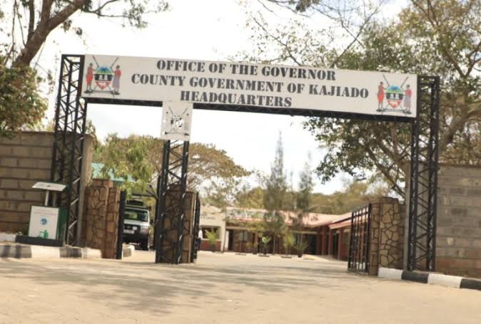

County Government of Kenya
Kajiado County is one of the 47 counties in Kenya. It is located in the southern part of the country and borders Nairobi County, Machakos County, Makueni County, Narok County, Taita Taveta County and the Republic of Tanzania.
The county is widely recognised for its Maasai cultural heritage, wildlife, beautiful landscapes and pastoral communities. It also has growing urban centres, commercial activities and investment opportunities.
The County Government works towards improving the living standards of residents through effective governance, public participation and provision of essential services.

To be a prosperous, inclusive and sustainable county where all residents enjoy a high quality of life.
To provide efficient, transparent and accountable services that promote equitable development and improve the welfare of Kajiado County residents.
Our county government is guided by the following values:
The County Government operates under the devolved system of governance established by the Constitution of Kenya.
Provides leadership to the County Executive and oversees the implementation of county policies, programmes and development plans.
Assists the Governor in county administration and performs duties assigned under the Constitution and applicable laws.
Responsible for implementing county policies and managing different government departments.
Represents residents, makes county laws, approves budgets and exercises oversight over the County Executive.
Kajiado County is organised into administrative units to promote effective governance and service delivery.
The county has the following six sub-counties: